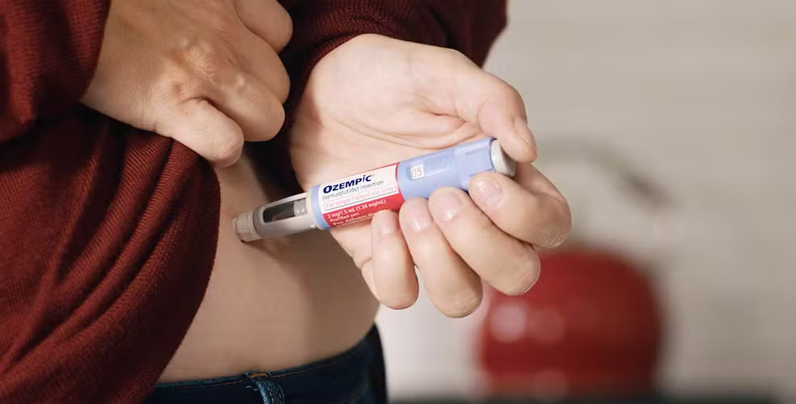
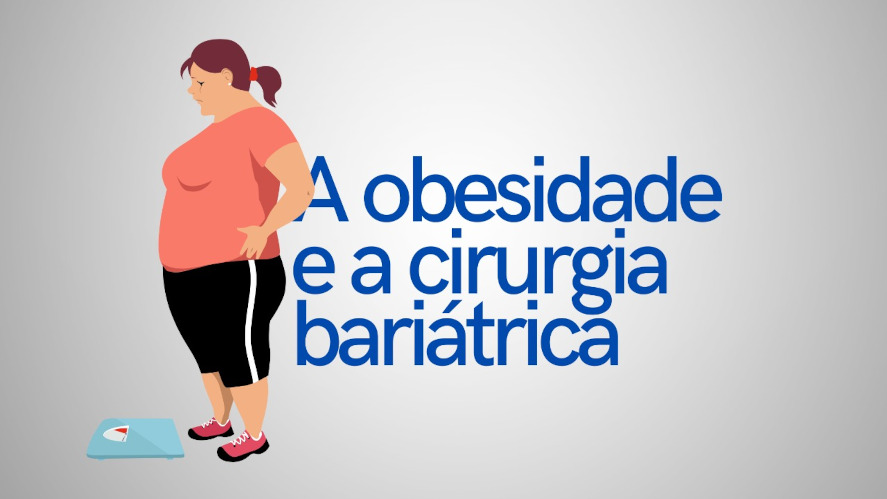
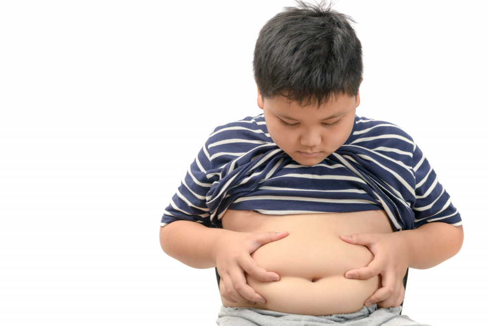

Obesidade é uma condição médica caracterizada pelo acúmulo excessivo de gordura corporal, a ponto de prejudicar a saúde. Essa condição não se resume apenas a um problema estético, mas sim a uma doença crônica associada a diversas outras complicações de saúde.
Causas da Obesidade
Alimentação: Consumo excessivo de alimentos calóricos, ricos em açúcar e gorduras saturadas, e com baixo valor nutricional.
Sedentarismo: Falta de atividade física regular, o que contribui para o acúmulo de gordura.
Fatores genéticos: Predisposição familiar à obesidade.
Fatores hormonais: Desequilíbrios hormonais podem influenciar o apetite e o metabolismo.
Condições médicas: Certas condições médicas, como o hipotireoidismo, podem contribuir para o desenvolvimento da obesidade.
Consequências da Obesidade
A obesidade aumenta o risco de desenvolver diversas doenças crônicas, como:
Diabetes tipo 2: Resistência à insulina e dificuldade em controlar os níveis de açúcar no sangue.
Problemas respiratórios: Apneia do sono e asma.
Doenças do fígado: Esteatose hepática não alcoólica (gordura no fígado).
Alguns tipos de câncer: Câncer de mama, cólon, endométrio e outros.
Problemas articulares: Artrite e gota.
Problemas psicológicos: Depressão e baixa autoestima.
Oque fazer para vencer a Obesidade
O tratamento da obesidade é um processo complexo e individualizado, que envolve mudanças no estilo de vida, como:
Alimentação saudável: Adoção de uma dieta equilibrada, rica em frutas, legumes, verduras e grãos integrais, e com menor consumo de alimentos processados e bebidas açucaradas.
Atividade física regular: Prática de exercícios físicos de forma regular, como caminhar, correr, nadar ou praticar algum esporte.
Mudanças comportamentais: Desenvolvimento de hábitos alimentares mais saudáveis e aumento da atividade física.
Tratamento medicamentoso: Em alguns casos, o médico pode indicar o uso de medicamentos para auxiliar na perda de peso.
Cirurgia bariátrica: Em casos de obesidade grave, a cirurgia bariátrica pode ser uma opção. Essa cirurgia necessita de uma Prescrição Medica pois contém riscos
Novos estudos e conclusões
Novos estudos indicam um aumento preocupante da obesidade no Brasil, com a Fundação Oswaldo Cruz (Fiocruz) estimando que, até 2044, 48% dos adultos estarão obesos e 27% com sobrepeso, resultando em 130 milhões de pessoas com excesso de gordura, se as tendências atuais persistirem. Outro estudo recente aponta que a obesidade é multicausal, com fatores que vão além da saúde e exige estratégias múltiplas para sua prevenção, envolvendo políticas públicas, alimentação saudável e prática de exercícios.
Projeções Alarmantes e Aumento da Prevalência
Aumento contínuo: Um estudo da Fiocruz, divulgado em 2024, projeta um cenário alarmante para o futuro do Brasil, onde, se as tendências atuais se mantiverem, a obesidade e o sobrepeso se tornarão a norma para a maioria dos adultos brasileiros.
Excesso de peso: O Atlas Global de Obesidade, de 2025, aponta que 68% da população brasileira tem excesso de peso, sendo 31% com obesidade e 37% com sobrepeso.
Causas e Fatores Contribuintes
Multicausalidade: A obesidade é um problema multicausal, cujas causas se estendem para além de fatores puramente de saúde, sendo influenciada por aspectos como:
Crescimento econômico e mudanças nos padrões de consumo.
Urbanização e urbanização.
Urbanização e mudança nos padrões de consumo.
Políticas públicas: Faltam políticas públicas estruturadas para combater o problema, que deveriam focar no incentivo à ingestão de alimentos saudáveis e à prática de esportes, segundo o IBGE.
Novas Descobertas e Abordagens
Novas definições: A ciência tem avançado para uma compreensão mais profunda da obesidade, propondo novas definições e parâmetros para o seu diagnóstico. Avanços no tratamento: Há um avanço significativo com a aprovação de novos medicamentos, como os agonistas do GLP-1, que demonstram eficácia na perda de peso e na redução de riscos cardiovasculares. Estratégias múltiplas: A pesquisa aponta a necessidade de estratégias múltiplas para a prevenção e o tratamento da obesidade, que devem envolver a abordagem dos múltiplos fatores que a influenciam.
Especialistas alertam para riscos de uso indiscriminado de caneta para emagrecer

Fonte: Agência Câmara de Notícias
O uso indiscriminado de medicamentos para diabetes e obesidade, como Ozempic e similares, com fins estéticos, pode gerar consequências graves aos pacientes que se automedicam. A pancreatite é um dos potenciais riscos à saúde dos usuários, conforme alerta do presidente da Associação Brasileira para o Estudo da Obesidade e Síndrome Metabólica, Bruno Halpern.
"Confunde-se o tratamento da obesidade com o desejo social de emagrecer. Então, muita gente, ao falar de remédios para emagrecer, pensa naquela pessoa magra que quer perder 4,5 quilos para ir para a praia, quando, na verdade, esses remédios são usados para tratar uma doença crônica", alerta.
A venda desses remédios e a necessidade de ampliação da restrição e classificação especial dos medicamentos foi tema de debate na Comissão de Saúde da Câmara dos Deputados na quarta-feira (11).
Atualmente, as drogas são classificadas com tarja vermelha, que exigem prescrição médica, mas estão sendo vendidas sem receita nas drogarias, farmácias de manipulação e até pela internet, segundo a pesquisadora da Universidade de São Paulo Tamires Capello, especialista em direito médico, hospitalar e saúde.
“Houve um crescimento de 663% nas vendas em seis anos, o que significa que só em 2024 o Ozempic isolado, que é a semaglutida, vendeu mais de R$ 3 bilhões, mais de 3 milhões de unidades. É um número muito grande, um recorde de vendas", afirma.
Ela entende que se trata de um medicamento revolucionário, muito bom e efetivo para doenças crônicas que matam muita gente. "Temos muito a agradecer por esse desenvolvimento. Só que esse crescimento tem que vir acompanhado com responsabilidade”, afirmou.
O presidente do Sindicato da Indústria de Produtos Farmacêuticos, Nelson Mussolini, defendeu maior controle das vendas. “A indústria farmacêutica defende de forma muito clara, muito transparente, que todos os produtos que tenham sua tarja vermelha têm que ter apresentação da receita médica”, explicou.
Medicação segura
O presidente-executivo da Associação da Indústria Farmacêutica de Pesquisa (Interfarma), Renato Alencar Porto, explica que a medicação é segura. O problema estaria no contrabando e na falsificação do remédio, que chega a ser ofertado em gostas.
“Esse produto tem um grau de segurança muito alto. Estamos falando de uma pesquisa clínica com mais de 25 mil pacientes. Mais de 13 milhões de pessoas já utilizaram esse produto e não há dados que mostrem riscos extraordinários dessa utilização”, afirmou. “Mas medicamentos precisam ser tomados de forma racional, adequada, pela pessoa certa, na dose certa e no momento certo”, acrescentou.
O representante do Conselho Federal de Medicina Raphael Parente apresentou um relatório defendendo a retenção da receita no ato da compra do remédio. Ele destacou que as drogas são de uso contínuo.
“O uso desses remédios é para o resto da vida, é crônico. É como remédio para hipertensão ou para diabetes. Muita gente usa um ano, dois anos, e perde um peso razoável. Mas os estudos mostram que depois esse peso volta como era antes”, alerta.
O deputado Dr. Francisco (PT-PI), que solicitou o debate, defendeu a aprovação de uma proposta (PL 2115/24, do deputado Fábio Teruel (MDB-SP)), da qual é relator, que exige prescrição médica e retenção da receita para a venda dos medicamentos para obesidade e diabetes.
“O objetivo é usar as informações do debate para ampliar o conhecimento no juízo de valor do nosso relatório ao projeto de lei e trazer para discussão dentro da Comissão de Saúde”, afirmou.
Cirurgia Bariátrica: Um Estudo da Dualidade

O que é?
A bariátrica, ou cirurgia bariátrica, é um conjunto de procedimentos cirúrgicos para tratar a obesidade grave, que altera o sistema digestivo para reduzir o tamanho do estômago, limitar a absorção de calorias e promover a perda de peso. É indicada para pessoas que não conseguem emagrecer com métodos convencionais, com base em critérios como Índice de Massa Corporal (IMC) acima de 35, frequentemente com doenças associadas como diabetes ou hipertensão.
Como funciona?
Redução do estômago: Diminui a capacidade do estômago de receber alimentos, o que aumenta a saciedade com porções menores.
Alteração do sistema digestivo: Algumas técnicas modificam o intestino para limitar a absorção de nutrientes.
Alterações hormonais: A cirurgia também pode afetar a produção de hormônios relacionados à fome e saciedade.
Principais técnicas
Sleeve (ou manga) gástrica: Remove uma parte do estômago, que passa a ter formato de "manga".
Bypass gástrico: Cria uma pequena bolsa no estômago e desvia parte do intestino, reduzindo a capacidade do estômago e a absorção de nutrientes.
Indicações
Obesidade grave (IMC ≥ 40): Obesidade grave, independentemente da presença de comorbidades.
Obesidade com comorbidades (IMC ≥ 35): Pessoas com IMC acima de 35 que tenham doenças relacionadas à obesidade, como diabetes, hipertensão, colesterol alto, etc.
Falha no tratamento conservador: Pacientes que não obtiveram sucesso com métodos não cirúrgicos como dieta e exercícios por pelo menos dois anos.
Dualidade da Bariátrica
O lado positivo: A transformação
A bariatrica pode ser o início de uma nova vida, com impactos positivos em diversas áreas:
Melhora da saúde: A perda de peso significativa pode levar à remissão de doenças graves associadas à obesidade, como diabetes tipo 2, hipertensão, apneia do sono e problemas articulares.
Aumento da qualidade de vida: A melhora na saúde física aumenta a disposição e a capacidade de realizar atividades cotidianas, como praticar exercícios, brincar com os filhos e participar de eventos sociais.
Impacto psicológico positivo: Muitos pacientes experimentam um aumento na autoestima e uma melhora nos relacionamentos sociais, o que pode diminuir a ansiedade e a depressão. A borboleta, frequentemente usada como símbolo da bariátrica, representa essa transformação.
O lado desafiador: O compromisso contínuo
Apesar dos benefícios, a cirurgia traz um lado complexo que exige adaptação e acompanhamento constante:
Risco de reganho de peso: A cirurgia não cura a obesidade, apenas a controla. Estudos indicam que uma parcela dos pacientes pode voltar a engordar com o tempo, especialmente se as questões emocionais e os hábitos alimentares disfuncionais não forem tratados.
Desafios psicológicos: O emagrecimento rápido e as mudanças no corpo podem desencadear quadros psiquiátricos, como ansiedade e depressão. O transtorno de compulsão alimentar, que muitas vezes motivou a cirurgia, pode persistir se não houver acompanhamento psicológico adequado.
Adaptações físicas e nutricionais: O paciente precisa se adaptar a uma nova dieta e estilo de vida para evitar o dumping (passagem rápida de alimento para o intestino) e a deficiência de vitaminas e minerais (como ferro e B12), que pode ocorrer devido à má absorção.
Acompanhamento multidisciplinar: O sucesso da bariátrica depende de um comprometimento vitalício com um estilo de vida saudável e do acompanhamento regular de uma equipe multidisciplinar, incluindo nutricionistas, psicólogos e educadores físicos.
Conclusão: Um processo de renovação contínua
A dualidade da cirurgia bariátrica mostra que ela é uma ferramenta poderosa e transformadora, mas não o fim do tratamento. Ela oferece uma nova oportunidade, mas exige dedicação, responsabilidade e apoio contínuo para que os resultados sejam duradouros. O verdadeiro sucesso não está apenas no emagrecimento, mas na reconstrução completa da relação com a comida, com o próprio corpo e com as emoções.
Esses texto são apenas para fins informativos. Para orientação ou diagnóstico médico, consulte um profissional.
O Obesidade Infantil

A obesidade infantil é multifatorial, mas os principais tipos classificados por causa são:
Obesidade Exógena (mais comum): Causada por um desequilíbrio entre a ingestão calórica e o gasto de energia.
Dieta inadequada: Alto consumo de alimentos ricos em gordura, açúcar (doces, refrigerantes), alimentos ultraprocessados, fast foods.
Sedentarismo: Falta de atividade física e excesso de tempo de tela (TV, celular, videogames).
Obesidade Endógena (mais rara): Causada por outras doenças, distúrbios hormonais ou fatores genéticos.
Fatores genéticos: Filhos de pais obesos têm maior predisposição.
Distúrbios hormonais ou outras condições médicas.
Riscos e Consequências:
A obesidade na infância aumenta o risco de:
Problemas físicos: Diabetes tipo 2, hipertensão, colesterol e triglicerídeos elevados, doenças respiratórias (como apneia do sono), doenças ortopédicas e, na vida adulta, o risco de obesidade e suas comorbidades.
Problemas psicossociais: Baixa autoestima, depressão, isolamento social e bullying (discriminação social), que podem levar a distúrbios alimentares.
Tratamento e Prevenção:
O tratamento geralmente envolve uma abordagem multidisciplinar e mudanças no estilo de vida de toda a família:
Alimentação saudável: Aumentar o consumo de alimentos naturais (verduras, legumes, frutas) e reduzir o consumo de alimentos ultraprocessados, açúcares e gorduras. É fundamental o acompanhamento com um nutricionista.
Atividade física: Incentivar a prática regular de exercícios físicos e a redução do tempo de tela. Brincadeiras e atividades ao ar livre são essenciais.
Acompanhamento profissional: Além do nutricionista, pode envolver o pediatra, educador físico e psicólogo, este último para lidar com os aspectos emocionais e comportamentais ligados à alimentação.
Prevenção: É o melhor caminho, começando desde o nascimento com a promoção de hábitos saudáveis (alimentação e rotina de sono) e o bom exemplo dos pais.
Transtornos Mentais
Transtornos Mentais Associados:
Depressão: É um dos transtornos mentais mais comuns em pessoas com obesidade. Fatores como o estigma, a baixa autoestima e as dificuldades enfrentadas no tratamento podem levar ao desânimo e à tristeza profunda.
Ansiedade: A ansiedade pode ser tanto uma causa (levando à compulsão alimentar, por exemplo) quanto uma consequência da obesidade. O estresse crônico associado à obesidade e ao estigma social pode manter o corpo em estado de alerta.
Transtorno de Compulsão Alimentar (TCA): Caracterizado pela ingestão de grandes quantidades de alimentos em um período curto, com uma sensação de perda de controle, o TCA é frequentemente associado à obesidade e pode ser uma forma de lidar com emoções e desconforto psicológico.
Impacto na Autoestima e Imagem Corporal
Baixa Autoestima: O estigma social, os comentários negativos e o julgamento (muitas vezes internalizado) afetam negativamente a autopercepção.
Imagem Corporal Distorcida: É comum que a pessoa obesa tenha uma percepção da sua imagem corporal que está em conflito com a realidade, sentindo-se mais gorda do que é, o que pode aumentar o sofrimento psicológico.
Estigma e Exclusão Social:
Estigma do Peso: A sociedade frequentemente hostiliza a obesidade, o que leva a experiências de exclusão, bullying e discriminação, piorando o humor e a qualidade de vida.
Culpa Internalizada: A pessoa pode passar a acreditar nas críticas e se culpar pelo seu peso ("viés de peso internalizado"), o que pode gerar comportamentos prejudiciais, como evitar buscar ajuda médica ou desistir de hábitos saudáveis.
Uso da Comida como Regulação Emocional:
Muitas vezes, a comida é buscada como uma estratégia para amenizar o sofrimento emocional, preenchendo um "vazio", aliviando a angústia, o estresse, a frustração ou a solidão. O ato de comer não está ligado ao prazer ou à fome física, mas sim ao alívio temporário do desconforto psicológico.
Outros Fatores:
Dificuldade de Expressão de Sentimentos: Ambientes familiares ou sociais que não permitem a expressão aberta de sentimentos podem contribuir para um comportamento alimentar desadaptativo, onde a comida se torna o refúgio para as emoções não processadas.
Dependência e Autopercepção Frágil: Em alguns casos, pacientes com excesso de peso podem apresentar uma autopercepção frágil, dependência de outras pessoas e dificuldade em identificar e perseguir os seus próprios desejos.
Relato
Bom, se voce é ou ja foi obeso ou gordo ja recebeu muitos palpites de como emagrecer de parentes que não sabem de nada de nutrição ou colegas de escola ou até mesmo de pessoas aleatorias na rua, por exemplo o famoso "É só fechar a boca" ou "É só parar de comer essas coisas, tira Massa tira fritura", ok nisso não está tão errado, mas no fim você descobre que não é cortar e sim restringir para que voce alcançe o deficit-calorico, pois seu corpo gasta uma quantidade de calorias por dia, se voce ingerir menos calorias do que seu corpo gasta voce vai começar a emagrecer, se juntar isso com academia ou outro exercicio fisico você conseguira dar uma acelerada no processo de emagrecimento.
Se quiser saber sobre Receitas que da para encaixar na dieta de emagrecimento, É só Clicar Aqui!!
Se quiser aqui esta um arquivo zip contendo 50 receitas fitness e muito saborosas!!50 receitas-fitness
se voce quiser ter uma experiência completa no emagrecimento procure (caso tenha uma condição financeira favoravel) compre uma balança digital para acompanhar seu desempenho e avanços
Caso queira ir ao canal do Renato Cariane um Profissional e influencer que tem como foco em alguns videos o emagrecimento é só Clicar aqui!!!